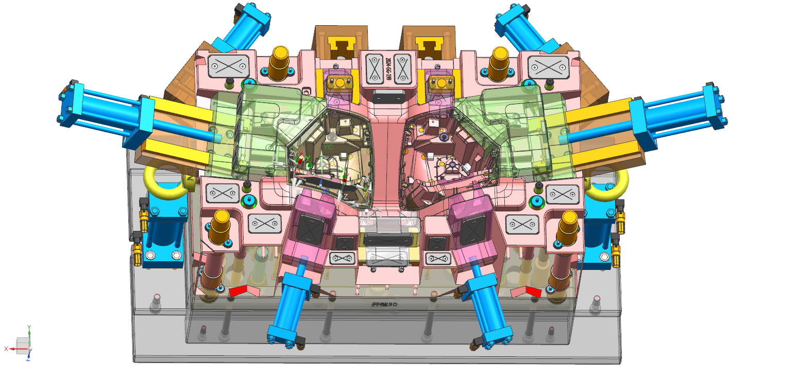
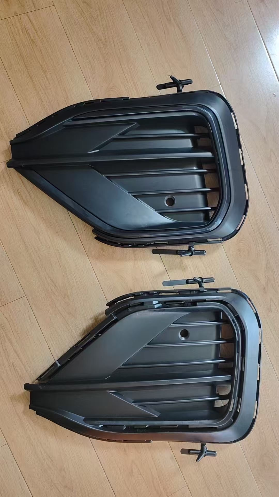

Why Conventional Cooling Is the Biggest Hidden Cost in Large Automotive Panel Tooling
Straight-drilled waterlines were the industry standard for decades — and they are quietly adding seconds to your cycle time, millimeters to your warpage, and thousands of dollars to your scrap rate. Here is what conformal cooling changes, and when it is worth the investment.
A door inner panel mold running at a Tier 1 supplier in central Europe had a cycle time of 62 seconds. The part — a large PP talc-filled structural component measuring 980 × 540mm — consistently showed 1.6mm of bow across the lower belt line, right at the B-surface datum used for door seal attachment. The customer was BMW. The tolerance was ±0.6mm. Every part was failing.
Three months of process optimization — melt temperature adjustments, hold pressure profiling, packing time trials — moved the bow from 1.6mm to 1.4mm. Not enough. The problem was not the process. It was that the cooling system could not remove heat uniformly from a wall section that varied between 2.8mm and 5.5mm across the part, because every waterline was straight-drilled from the mold block face and terminated well short of the deepest draw areas.
When we redesigned the tool with conformal cooling inserts in the three critical zones, bow dropped to 0.3mm and cycle time fell to 44 seconds. That 18-second reduction, on a two-cavity tool running three shifts, recovered the cost of the cooling upgrade in under six weeks of production.

What cooling actually controls
Cooling is responsible for roughly 60–70% of total injection mold cycle time. It also governs part quality in ways that process engineers often misattribute to resin, gate position, or packing pressure. When a part warps, sinks, or holds residual stress, the first question should always be whether the cooling system is removing heat evenly — not whether a process parameter needs adjustment.
The physics is straightforward: plastic shrinks as it cools, and it shrinks anisotropically. If one region of a part cools significantly faster than an adjacent region, differential shrinkage creates internal stress. For thin-to-thick transitions — rib intersections, boss pads, seal flanges — that stress resolves after ejection as visible warpage, often hours after the part leaves the press.
The goal of a well-designed cooling system is not to cool the part quickly. It is to cool every region of the part at the same rate. Those are very different engineering problems.
Conventional straight-drilled waterlines approximate this in simple, uniform geometries. They fail systematically in large panels with complex draw, deep ribs, and variable wall sections — exactly the parts that dominate exterior and interior automotive programs at OEMs like Mercedes-Benz and BMW.
Where straight-drilled cooling breaks down
1. Geometric shadow zones
Drill bits travel in straight lines. For any deep-draw feature — a structural rib more than 40mm tall, a deep boss, a curved panel with significant Z-height — there is a thermal shadow behind the feature where no waterline can reach. Heat accumulates in these zones. The plastic in contact with the shadow zone cools last, contracts last, and pulls the part out of flat.
2. Minimum distance constraints
Conventional waterlines must maintain a minimum distance from the cavity surface — typically 12–15mm for steel — to prevent stress concentration and thermal breakthrough. For thin ribs or sharp features, this minimum distance means the cooling circuit is often 20–30mm away from the highest heat-flux surface in the tool. The result is slow, uneven extraction precisely where the part needs it most.
3. Flow rate compromises
Long straight circuits running from one face of the mold block to the other accumulate pressure drop over their full length. In large tools — blocks exceeding 600mm — the flow rate required to maintain turbulent conditions (Reynolds number above 4,000) at the far end of the circuit demands inlet pressures that the cooling manifold cannot consistently supply. Sections of the circuit run in laminar flow, cutting heat transfer efficiency by 40–60% compared to turbulent conditions.
4. Warpage locked in before ejection
The most expensive consequence of non-uniform cooling is that the stress profile is fixed before the part leaves the mold. No fixture, no secondary operation, and no process adjustment downstream can fully correct for differential shrinkage that has already resolved into the part's geometry. The only fix is the cooling system itself.
How conformal cooling works
Conformal cooling channels follow the contour of the cavity surface at a consistent distance — typically 8–12mm from the mold steel — regardless of part geometry. Because they are not limited to straight-line drill paths, they can reach shadow zones, maintain constant proximity around curved features, and distribute cooling uniformly across wall sections that vary significantly in thickness.
These channels cannot be machined conventionally. They are produced by one of two methods: metal additive manufacturing (laser powder bed fusion, most commonly in tool steel grades such as 1.2709 or H13) for full inserts or cavity blocks, or high-pressure copper-alloy brazing for hybrid constructions where only specific zones need conformal geometry. Each method has different cost implications, lead times, and thermal performance characteristics.
| Method | Best application | Thermal conductivity | Lead time | Relative cost |
|---|---|---|---|---|
| Laser powder bed fusion (LPBF) — tool steel | Complex inserts, full cavity blocks, deep draw features | Moderate (similar to conventional tool steel) | 3–6 weeks (insert) | High — justified by cycle and quality gains on large programs |
| Brazed copper-alloy insert | Isolated hot spots, rib cores, boss zones | High (copper alloy: 3–5× steel) | 2–4 weeks | Medium — good ROI for targeted problem areas |
| Slotted and capped (baffle variant) | Flat or mildly curved panels where EDM is accessible | Moderate | 1–2 weeks | Low — limited geometry capability, best as a transitional solution |
| Conventional straight-drill (baseline) | Simple, uniform wall geometry; shallow draw | Moderate | Included in standard tool build | Lowest upfront — highest total cost on complex programs |
Our process: how we design and validate a cooling system before tool build
Identify all wall thickness transitions, deep-draw zones, and geometric shadow areas. Classify each by heat flux priority: critical, moderate, or accessible with conventional drilling.
Run transient thermal FEA on the full tool assembly using actual coolant flow conditions. Map temperature delta across the cavity surface at end of cooling phase — the target is ±3°C or better.
Feed the cooling result into full Moldflow warpage analysis. Confirm that differential shrinkage across all datum surfaces falls within GD&T tolerance before any steel is committed.
Model the production economics: cycle time reduction, scrap rate improvement, and secondary operation elimination against the cost premium of conformal inserts. Present to the customer before tool build sign-off.
Real-world result: door inner panel mold, BMW Tier 1 program
The original tool used 14 straight-drilled circuits on the cavity side and 10 on the core side, with a maximum cooling distance of 28mm from the cavity surface in the lower panel zone. Thermal simulation showed a 14°C peak-to-valley temperature delta across the cavity at end of cooling — more than four times the target. The three problem zones (lower belt line, B-pillar reinforcement rib cluster, and door handle recess) all sat in geometric shadow areas unreachable by conventional drilling.
We designed LPBF-printed conformal inserts for the belt line zone and brazed copper-alloy inserts for the two rib clusters. The revised cooling simulation showed a 3.8°C peak-to-valley delta. Moldflow warpage prediction dropped from 1.6mm to 0.28mm at the seal datum. The tool was built with the conformal inserts specified from the outset — no rework, no trial-and-error. Production results after first-off validation:

When conformal cooling is — and is not — the right answer
Conformal cooling carries a cost premium. The decision to specify it should be driven by a clear economic case, not by technology preference. Here is the decision framework we use with customers at the start of every large panel program:
- Cycle time sensitivity. On a two-cavity tool running three shifts, every second of cycle time reduction is worth roughly 6,000–8,000 additional shots per year. At automotive volumes, an 18-second reduction pays for LPBF inserts in weeks, not months.
- Wall section variation. Parts with more than 2:1 wall thickness ratio across a single flow path are high candidates. Uniform thin-wall parts on shallow tools are not.
- Class A or precision datum surfaces. Any surface held to ±0.5mm or tighter, or any surface that feeds a downstream seal or assembly operation, warrants thermal analysis before defaulting to conventional cooling.
- Tool life and volume. Conformal inserts add upfront cost. On a 300,000-shot tool for a niche program, the economics rarely close. On a 2,000,000-shot production tool for a volume platform, they almost always do.
The most common mistakes in automotive cooling design
After reviewing dozens of problem tools, three patterns appear repeatedly:
- Designing cooling last. Cooling circuits are often routed around the ejector pattern, runner system, and slide mechanisms — whatever space is left. The result is a cooling system defined by what the tool has room for, not by what the part requires. Cooling layout must be established alongside cavity and core design, not after.
- Optimizing for flow rate, not uniformity. A high-flow manifold delivering coolant at 25°C means nothing if the circuit geometry concentrates that coolant in accessible zones and leaves shadow areas to air-cool. Temperature delta across the surface is the metric that matters, not inlet temperature or flow rate alone.
- Skipping thermal simulation on "standard" tools. Large flat panels with simple apparent geometry can mask severe internal cooling problems — especially where deep ribs interrupt otherwise uniform wall sections. There is no panel geometry simple enough to skip thermal validation on a precision automotive program.
Every week of cycle time saved on a high-volume platform is worth more than the cost of a proper simulation study — usually by an order of magnitude. The economics of getting cooling right are not subtle.
At Gege Mould, cooling system design is integrated into the tool design review from the first geometry intake — not added once the cavity is committed. If you are planning a large panel program and want an independent thermal analysis of your current cooling concept, or a review of whether conformal inserts are warranted for your specific geometry and volume requirements, our engineering team is available to run the numbers before tool build begins.
Ready to Discuss Your Mold Program?
Send us your part drawing or CAD file. Our engineering team will review it and respond with an initial assessment within 48 hours.
Get a Free Quote